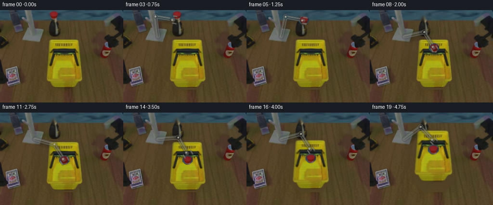
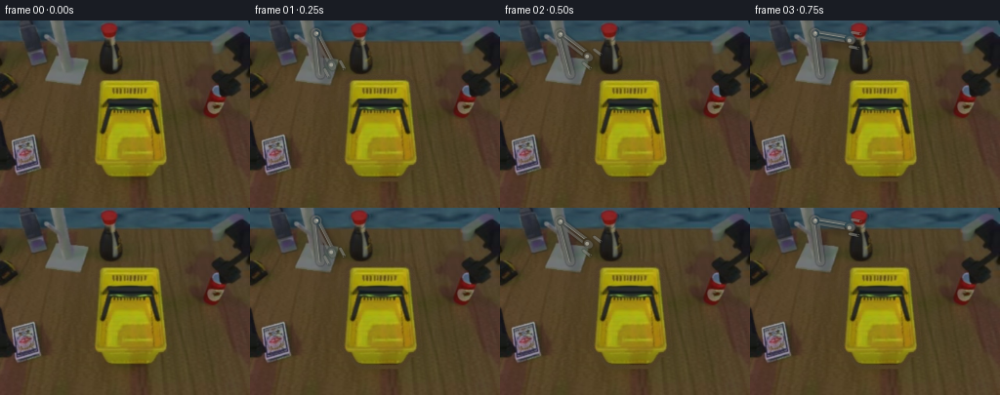

CODING AGENTS AS PIXEL WORLD MODELS
traex/DeepSeek-V4.1-Flash · common50_0047
点击播放 · 原生 RGB 像素
此结果可播放，但该运行尚未通过最终提交审核。页面展示不代表评测通过。
逐轮保存的候选
回放视频、检查图与代码变化。
每份候选均可单独播放。实际图片检查记录在下方工具轨迹中。
候选 01播放与检查图
点击播放 · 原生 RGB 像素


展开代码变化
--- 上一保存版本
+++ 本次保存版本
@@ -0,0 +1,485 @@
+"""Generate a 20-frame tabletop robot pick-and-place sequence.
+
+The scene is built from the supplied first frame using local pixel operations:
+texture-based background repair, rigid sprite transforms, and a procedurally
+shaded two-link arm. No learned models or external renderers are used.
+"""
+
+from pathlib import Path
+
+import cv2
+import numpy as np
+from PIL import Image
+from scipy.ndimage import (
+ binary_closing,
+ binary_dilation,
+ binary_fill_holes,
+ gaussian_filter,
+)
+
+import artifact_io
+
+
+CASE_DIR = Path(__file__).resolve().parent
+WIDTH, HEIGHT, FRAMES, FPS = 256, 192, 20, 4
+
+
+def smoothstep(x):
+ x = np.clip(x, 0.0, 1.0)
+ return x * x * (3.0 - 2.0 * x)
+
+
+def lerp(a, b, t):
+ return a + (b - a) * t
+
+
+def polygon_mask(points, shape):
+ mask = np.zeros(shape, np.uint8)
+ cv2.fillPoly(mask, [np.asarray(points, np.int32)], 255)
+ return mask > 0
+
+
+def build_masks(img):
+ r = img[:, :, 0].astype(np.float32)
+ g = img[:, :, 1].astype(np.float32)
+ b = img[:, :, 2].astype(np.float32)
+ mx = img.max(axis=2).astype(np.float32)
+ mn = img.min(axis=2).astype(np.float32)
+ sat = (mx - mn) / np.maximum(mx, 1.0)
+
+ yy, xx = np.mgrid[:HEIGHT, :WIDTH]
+ basket_region = polygon_mask(
+ [
+ (102, 58),
+ (164, 58),
+ (168, 78),
+ (171, 110),
+ (172, 142),
+ (156, 161),
+ (111, 161),
+ (95, 142),
+ (97, 110),
+ (100, 78),
+ ],
+ (HEIGHT, WIDTH),
+ )
+ yellow = (
+ (r > 102)
+ & (g > 82)
+ & (b < 105)
+ & (g > 0.68 * r)
+ & (r > 0.72 * g)
+ & (sat > 0.34)
+ )
+ dark = (mx < 72) & (sat < 0.40)
+ basket_core = (yellow | dark) & basket_region
+ basket_core = binary_closing(basket_core, iterations=2)
+ basket_mask = binary_fill_holes(basket_core)
+ basket_mask = binary_dilation(basket_mask, iterations=1) & basket_region
+
+ can_region = (xx >= 98) & (xx <= 124) & (yy >= 0) & (yy <= 23)
+ can_red = (r > 68) & (r - g > 15) & (r - b > 8) & can_region
+ can_core = binary_closing(can_red, iterations=1)
+ can_core = binary_fill_holes(can_core)
+ can_mask = binary_dilation(can_core, iterations=1)
+ # The can is a compact top-down ellipse; use a slightly softened rim.
+ ellipse = np.zeros((HEIGHT, WIDTH), np.uint8)
+ cv2.ellipse(ellipse, (111, 10), (10, 9), 0, 0, 360, 255, -1)
+ can_mask = can_mask | (ellipse > 0)
+ can_mask &= (xx >= 99) & (xx <= 123) & (yy <= 21)
+ return basket_mask, can_mask
+
+
+def make_clean_plate(img, basket_mask, can_mask):
+ """Repair the two movable objects using local texture only."""
+ clean = img.copy()
+
+ # Small can hole on the blue-gray rear wall.
+ can_hole = binary_dilation(can_mask, iterations=2).astype(np.uint8) * 255
+ clean = cv2.inpaint(clean, can_hole, 4, cv2.INPAINT_TELEA)
+
+ # Estimate a clean tabletop row color from pixels that have the brown
+ # tabletop palette. This excludes the yellow basket and metallic parts.
+ r = img[:, :, 0].astype(np.float32)
+ g = img[:, :, 1].astype(np.float32)
+ b = img[:, :, 2].astype(np.float32)
+ table_like = (
+ (r > 52)
+ & (r < 142)
+ & (g > 38)
+ & (g < 102)
+ & (b < 82)
+ & (r > 0.92 * g)
+ & (g > 1.02 * b)
+ )
+ fill_region = binary_dilation(basket_mask, iterations=4)
+ table_like &= ~fill_region
+ table_like[:, 96:174] = False
+
+ row_base = np.zeros((HEIGHT, 3), np.float32)
+ for y in range(HEIGHT):
+ vals = img[y][table_like[y]]
+ if len(vals) < 20:
+ vals = img[max(0, y - 2) : min(HEIGHT, y + 3)][
+ table_like[max(0, y - 2) : min(HEIGHT, y + 3)]
+ ]
+ if len(vals):
+ row_base[y] = np.median(vals, axis=0)
+ else:
+ row_base[y] = row_base[max(0, y - 1)]
+
+ # The rear wall is a separate blue-gray surface above the table edge.
+ wall_base = np.array([51.0, 76.0, 90.0], np.float32)
+ row_base[:22] = wall_base
+
+ # Sample high-frequency grain from the clean bottom of the table.
+ tex = img[168:192, :, :].astype(np.float32)
+ tex_low = gaussian_filter(tex, sigma=(2.0, 2.0, 0.0))
+ grain = tex - tex_low
+ yy, xx = np.mgrid[:HEIGHT, :WIDTH]
+ ty = (yy * 7 + xx * 3) % tex.shape[0]
+ tx = (xx * 11 + yy * 5) % tex.shape[1]
+ grain_sample = grain[ty, tx]
+
+ fill = row_base[yy] + 0.72 * grain_sample
+ fill += np.stack(
+ [
+ 1.8 * np.sin(xx * 0.11 + yy * 0.07),
+ 1.2 * np.sin(xx * 0.08 - yy * 0.05),
+ 0.8 * np.cos(xx * 0.09 + yy * 0.06),
+ ],
+ axis=2,
+ )
+
+ alpha = gaussian_filter(fill_region.astype(np.float32), sigma=0.9)
+ alpha = np.clip(alpha * 1.35, 0.0, 1.0)
+ alpha[fill_region] = 1.0
+ alpha3 = alpha[:, :, None]
+ clean = clean.astype(np.float32) * (1.0 - alpha3) + fill * alpha3
+ return np.clip(clean, 0, 255).astype(np.uint8)
+
+
+def make_sprites(img, basket_mask, can_mask):
+ # Basket sprite
+ bx0, by0, bx1, by1 = 90, 50, 182, 168
+ basket_alpha = gaussian_filter(basket_mask.astype(np.float32), sigma=0.65)
+ basket_alpha = np.clip(basket_alpha * 1.45, 0.0, 1.0)
+ basket_alpha[basket_mask] = 1.0
+ basket_rgb = img[by0:by1, bx0:bx1].copy()
+ basket_a = basket_alpha[by0:by1, bx0:bx1].copy()
+ front_a = basket_a.copy()
+ front_a[: 116 - by0] = 0.0
+
+ # Can sprite
+ cx0, cy0, cx1, cy1 = 92, 0, 132, 25
+ can_alpha = gaussian_filter(can_mask.astype(np.float32), sigma=0.55)
+ can_alpha = np.clip(can_alpha * 1.55, 0.0, 1.0)
+ can_alpha[can_mask] = 1.0
+ can_rgb = img[cy0:cy1, cx0:cx1].copy()
+ can_a = can_alpha[cy0:cy1, cx0:cx1].copy()
+ return {
+ "basket": (basket_rgb, basket_a, (bx0, by0)),
+ "basket_front": (basket_rgb, front_a, (bx0, by0)),
+ "can": (can_rgb, can_a, (cx0, cy0)),
+ }
+
+
+def warp_sprite(sprite, center_src, center_dst, scale=1.0):
+ rgb, alpha, (x0, y0) = sprite
+ sx, sy = center_src
+ dx, dy = center_dst
+ m = np.array(
+ [
+ [scale, 0.0, dx - scale * (sx - x0)],
+ [0.0, scale, dy - scale * (sy - y0)],
+ ],
+ np.float32,
+ )
+ warped_rgb = cv2.warpAffine(
+ rgb, m, (WIDTH, HEIGHT), flags=cv2.INTER_LINEAR, borderMode=cv2.BORDER_REFLECT
+ )
+ warped_a = cv2.warpAffine(
+ alpha, m, (WIDTH, HEIGHT), flags=cv2.INTER_LINEAR, borderMode=cv2.BORDER_CONSTANT
+ )
+ return warped_rgb.astype(np.float32), warped_a.astype(np.float32)
+
+
+def composite(frame, rgb, alpha, brightness=1.0):
+ a = np.clip(alpha, 0.0, 1.0)[:, :, None]
+ src = np.clip(rgb.astype(np.float32) * brightness, 0, 255)
+ out = frame.astype(np.float32) * (1.0 - a) + src * a
+ return np.clip(out, 0, 255).astype(np.uint8)
+
+
+def add_ellipse_shadow(frame, center, axes, offset, alpha, blur):
+ layer = np.zeros((HEIGHT, WIDTH), np.float32)
+ cv2.ellipse(
+ layer,
+ (int(round(center[0] + offset[0])), int(round(center[1] + offset[1]))),
+ (max(1, int(axes[0])), max(1, int(axes[1]))),
+ 0,
+ 0,
+ 360,
+ alpha,
+ -1,
+ cv2.LINE_AA,
+ )
+ layer = gaussian_filter(layer, sigma=blur)
+ out = frame.astype(np.float32)
+ shade = np.array([0.42, 0.40, 0.35], np.float32)
+ out *= 1.0 - layer[:, :, None] * (1.0 - shade)
+ return np.clip(out, 0, 255).astype(np.uint8)
+
+
+def solve_ik(shoulder, target, l1, l2, previous_elbow):
+ s = np.asarray(shoulder, np.float32)
+ t = np.asarray(target, np.float32)
+ delta = t - s
+ dist = float(np.linalg.norm(delta))
+ dist = float(np.clip(dist, abs(l1 - l2) + 0.5, l1 + l2 - 0.3))
+ direction = delta / max(float(np.linalg.norm(delta)), 1e-6)
+ reach = s + direction * dist
+ a = (l1 * l1 - l2 * l2 + dist * dist) / (2.0 * dist)
+ h = np.sqrt(max(0.0, l1 * l1 - a * a))
+ perp = np.array([-direction[1], direction[0]], np.float32)
+ base = s + a * direction
+ e1 = base + h * perp
+ e2 = base - h * perp
+ if previous_elbow is None:
+ # Prefer an elbow above the line of action, matching the overhead arm.
+ elbow = e1 if e1[1] < e2[1] else e2
+ else:
+ p = np.asarray(previous_elbow, np.float32)
+ elbow = e1 if np.linalg.norm(e1 - p) <= np.linalg.norm(e2 - p) else e2
+ return reach.astype(np.float32), elbow.astype(np.float32)
+
+
+def _capsule(layer, p0, p1, width, color):
+ cv2.line(
+ layer,
+ tuple(np.round(p0).astype(int)),
+ tuple(np.round(p1).astype(int)),
+ color,
+ int(round(width)),
+ cv2.LINE_AA,
+ )
+
+
+def draw_arm(frame, target, grip, previous_elbow, lifted=False):
+ """Draw a stable two-link metallic arm over the scene."""
+ scale = 3
+ big = np.zeros((HEIGHT * scale, WIDTH * scale, 3), np.uint8)
+ shoulder = np.array([72.0, 55.0], np.float32)
+ reach, elbow = solve_ik(shoulder, target, 42.0, 38.0, previous_elbow)
+ s3 = shoulder * scale
+ e3 = elbow * scale
+ t3 = reach * scale
+
+ # Contact shadow on the table, drawn first and softened.
+ shadow = np.zeros((HEIGHT, WIDTH), np.float32)
+ sh_off = np.array([5.0, 6.0])
+ _capsule(shadow, shoulder + sh_off, elbow + sh_off, 11, 0.20)
+ _capsule(shadow, elbow + sh_off, reach + sh_off, 10, 0.20)
+ cv2.circle(shadow, tuple(np.round((elbow + sh_off) * 1).astype(int)), 6, 0.22, -1)
+ shadow = gaussian_filter(shadow, sigma=2.0)
+ frame_f = frame.astype(np.float32)
+ frame_f *= 1.0 - shadow[:, :, None] * 0.72
+ frame = np.clip(frame_f, 0, 255).astype(np.uint8)
+
+ # Dark outlines.
+ _capsule(big, s3, e3, 11 * scale, (31, 31, 30))
+ _capsule(big, e3, t3, 10 * scale, (29, 29, 28))
+ cv2.circle(big, tuple(np.round(e3).astype(int)), int(7 * scale), (27, 27, 26), -1, cv2.LINE_AA)
+
+ # Brushed metal bodies.
+ _capsule(big, s3, e3, 8.5 * scale, (105, 106, 102))
+ _capsule(big, e3, t3, 7.5 * scale, (111, 112, 107))
+ cv2.circle(big, tuple(np.round(e3).astype(int)), int(5.5 * scale), (116, 116, 110), -1, cv2.LINE_AA)
+
+ # Offset highlight and shaded side make the links read as cylinders.
+ d1 = e3 - s3
+ d1 /= max(np.linalg.norm(d1), 1e-6)
+ n1 = np.array([-d1[1], d1[0]]) * scale
+ d2 = t3 - e3
+ d2 /= max(np.linalg.norm(d2), 1e-6)
+ n2 = np.array([-d2[1], d2[0]]) * scale
+ _capsule(big, s3 - 0.18 * n1, e3 - 0.18 * n1, 2.1 * scale, (151, 151, 143))
+ _capsule(big, e3 - 0.18 * n2, t3 - 0.18 * n2, 1.8 * scale, (157, 156, 146))
+ _capsule(big, s3 + 0.25 * n1, e3 + 0.25 * n1, 1.2 * scale, (65, 66, 62))
+ _capsule(big, e3 + 0.25 * n2, t3 + 0.25 * n2, 1.1 * scale, (61, 62, 58))
+
+ # Joint rings and a small wrist collar.
+ cv2.circle(big, tuple(np.round(e3).astype(int)), int(4.2 * scale), (53, 54, 51), -1, cv2.LINE_AA)
+ cv2.circle(big, tuple(np.round(e3).astype(int)), int(2.6 * scale), (145, 145, 136), -1, cv2.LINE_AA)
+ cv2.circle(big, tuple(np.round(e3 - 1.1 * n2).astype(int)), int(1.2 * scale), (184, 181, 166), -1, cv2.LINE_AA)
+
+ approach = reach - elbow
+ approach /= max(np.linalg.norm(approach), 1e-6)
+ side = np.array([-approach[1], approach[0]], np.float32)
+ wrist = reach - approach * 2.5
+ _capsule(big, wrist * scale, reach * scale, 10 * scale, (35, 35, 33))
+ _capsule(big, (wrist + 0.6 * side) * scale, (reach + 0.6 * side) * scale, 7 * scale, (104, 105, 101))
+ cv2.circle(big, tuple(np.round((wrist + 1.1 * side) * scale).astype(int)), int(2.0 * scale), (167, 165, 153), -1)
+
+ # Parallel jaws. Grip goes from open to closed without changing link geometry.
+ open_sep = 17.0 if not lifted else 16.0
+ closed_sep = 11.0
+ sep = lerp(open_sep, closed_sep, float(np.clip(grip, 0.0, 1.0)))
+ finger_len = 9.0
+ finger_start = reach - approach * 1.2
+ for sign in (-1.0, 1.0):
+ p0 = finger_start + side * sign * sep * 0.5
+ p1 = p0 + approach * finger_len
+ _capsule(big, p0 * scale, p1 * scale, 4.4 * scale, (30, 30, 29))
+ _capsule(big, (p0 + 0.45 * side * sign) * scale, (p1 + 0.45 * side * sign) * scale, 2.2 * scale, (126, 126, 119))
+ cv2.circle(big, tuple(np.round((p1 + 0.2 * side * sign) * scale).astype(int)), int(1.25 * scale), (32, 32, 30), -1, cv2.LINE_AA)
+ cv2.circle(big, tuple(np.round((p1 - 0.55 * side * sign) * scale).astype(int)), int(0.55 * scale), (184, 181, 166), -1, cv2.LINE_AA)
+
+ small = cv2.resize(big, (WIDTH, HEIGHT), interpolation=cv2.INTER_AREA)
+ # Composite only where the arm layer is non-empty.
+ a = np.clip(small.max(axis=2).astype(np.float32) / 255.0 * 1.35, 0.0, 1.0)
+ return composite(frame, small, a), elbow
+
+
+def basket_state(frame_idx):
+ """Return basket scale, translation and lift progress."""
+ lift_t = smoothstep((frame_idx - 15) / 4.0)
+ scale = 1.0 + 0.055 * lift_t
+ tx = -1.5 * lift_t
+ ty = -21.0 * lift_t
+ return scale, np.array([tx, ty], np.float32), lift_t
+
+
+def can_state(frame_idx):
+ """Return can center, scale, visibility and whether it is inside basket."""
+ if frame_idx <= 3:
+ return np.array([111.0, 10.0], np.float32), 1.0, 1.0, False
+ if frame_idx <= 8:
+ t = smoothstep((frame_idx - 4) / 4.0)
+ p0 = np.array([111.0, 10.0], np.float32)
+ p1 = np.array([128.0, 33.0], np.float32)
+ p2 = np.array([139.0, 58.0], np.float32)
+ p3 = np.array([133.0, 78.0], np.float32)
+ p = (
+ (1 - t) ** 3 * p0
+ + 3 * (1 - t) ** 2 * t * p1
+ + 3 * (1 - t) * t**2 * p2
+ + t**3 * p3
+ )
+ return p.astype(np.float32), 1.0, 1.0, False
+ if frame_idx <= 11:
+ t = smoothstep((frame_idx - 9) / 2.0)
+ p = lerp(np.array([133.0, 78.0]), np.array([133.0, 98.0]), t)
+ return p.astype(np.float32), 1.0, 1.0, t > 0.45
+
+ scale, trans, _ = basket_state(frame_idx)
+ p = np.array([133.0, 98.0], np.float32)
+ pivot = np.array([134.0, 110.0], np.float32)
+ p = pivot + scale * (p - pivot) + trans
+ return p, scale, 1.0, True
+
+
+def arm_state(frame_idx):
+ """Return hand target and grip closure."""
+ if frame_idx == 0:
+ return np.array([85.0, 47.0], np.float32), 0.0
+ if frame_idx <= 4:
+ t = smoothstep((frame_idx - 1) / 3.0)
+ target = lerp(np.array([85.0, 47.0]), np.array([111.0, 10.0]), t)
+ grip = smoothstep((frame_idx - 2) / 2.0)
+ return target.astype(np.float32), grip
+ if frame_idx <= 8:
+ p, _, _, _ = can_state(frame_idx)
+ return p, 1.0
+ if frame_idx <= 11:
+ p, _, _, _ = can_state(frame_idx)
+ grip = 1.0 - smoothstep((frame_idx - 10) / 1.5)
+ return p, grip
+ if frame_idx <= 15:
+ t = smoothstep((frame_idx - 12) / 3.0)
+ target = lerp(np.array([133.0, 98.0]), np.array([133.0, 80.0]), t)
+ grip = smoothstep((frame_idx - 14) / 1.0)
+ return target.astype(np.float32), grip
+
+ scale, trans, _ = basket_state(frame_idx)
+ pivot = np.array([134.0, 110.0], np.float32)
+ p = pivot + scale * (np.array([133.0, 80.0], np.float32) - pivot) + trans
+ return p.astype(np.float32), 1.0
+
+
+def make_frames():
+ source = np.asarray(Image.open(CASE_DIR / "first_frame.png").convert("RGB"))
+ assert source.shape == (HEIGHT, WIDTH, 3), source.shape
+ basket_mask, can_mask = build_masks(source)
+ clean = make_clean_plate(source, basket_mask, can_mask)
+ sprites = make_sprites(source, basket_mask, can_mask)
+
+ frames = []
+ previous_elbow = None
+ for i in range(FRAMES):
+ if i == 0:
+ frames.append(source.copy())
+ previous_elbow = None
+ continue
+
+ frame = clean.copy()
+ bscale, btrans, lift_t = basket_state(i)
+ bcenter = np.array([134.0, 110.0], np.float32) + btrans
+
+ # Basket shadow grows and separates slightly while it is lifted.
+ add_ellipse_shadow(
+ frame,
+ bcenter,
+ (37 + 5 * lift_t, 48 + 5 * lift_t),
+ (4 + 4 * lift_t, 7 + 7 * lift_t),
+ 0.25 + 0.08 * lift_t,
+ 5.0 + 3.0 * lift_t,
+ )
+
+ cpos, cscale, cvis, inside = can_state(i)
+ if not inside:
+ add_ellipse_shadow(
+ frame,
+ cpos,
+ (8.5 * cscale, 7.5 * cscale),
+ (3.0, 4.0),
+ 0.24,
+ 2.0,
+ )
+
+ basket_rgb, basket_a = warp_sprite(
+ sprites["basket"], (134.0, 110.0), bcenter, bscale
+ )
+ frame = composite(frame, basket_rgb, basket_a, 1.0 + 0.018 * lift_t)
+
+ if cvis > 0:
+ can_rgb, can_a = warp_sprite(
+ sprites["can"], (111.0, 10.0), cpos, cscale
+ )
+ frame = composite(frame, can_rgb, can_a * cvis, 1.0)
+ if inside:
+ front_rgb, front_a = warp_sprite(
+ sprites["basket_front"], (134.0, 110.0), bcenter, bscale
+ )
+ frame = composite(frame, front_rgb, front_a, 1.0 + 0.018 * lift_t)
+
+ target, grip = arm_state(i)
+ lifted = i >= 16
+ frame, previous_elbow = draw_arm(frame, target, grip, previous_elbow, lifted)
+ frames.append(np.clip(frame, 0, 255).astype(np.uint8))
+
+ result = np.stack(frames, axis=0)
+ assert result.shape == (FRAMES, HEIGHT, WIDTH, 3)
+ assert result.dtype == np.uint8
+ assert np.array_equal(result[0], source)
+ return result
+
+
+def main():
+ frames = make_frames()
+ artifact_io.save(frames, CASE_DIR)
+ print(f"wrote {len(frames)} frames to {CASE_DIR}")
+
+
+if __name__ == "__main__":
+ main()
候选 02播放与检查图
点击播放 · 原生 RGB 像素

展开代码变化
--- 上一保存版本
+++ 本次保存版本
@@ -103,6 +103,7 @@
r = img[:, :, 0].astype(np.float32)
g = img[:, :, 1].astype(np.float32)
b = img[:, :, 2].astype(np.float32)
+ yy, xx = np.mgrid[:HEIGHT, :WIDTH]
table_like = (
(r > 52)
& (r < 142)
@@ -113,6 +114,9 @@
& (g > 1.02 * b)
)
fill_region = binary_dilation(basket_mask, iterations=4)
+ # Replace the original wrist and jaws with the articulated arm.
+ gripper_region = (xx >= 101) & (xx <= 123) & (yy >= 22) & (yy <= 65)
+ fill_region = fill_region | gripper_region
table_like &= ~fill_region
table_like[:, 96:174] = False
@@ -136,7 +140,6 @@
tex = img[168:192, :, :].astype(np.float32)
tex_low = gaussian_filter(tex, sigma=(2.0, 2.0, 0.0))
grain = tex - tex_low
- yy, xx = np.mgrid[:HEIGHT, :WIDTH]
ty = (yy * 7 + xx * 3) % tex.shape[0]
tx = (xx * 11 + yy * 5) % tex.shape[1]
grain_sample = grain[ty, tx]
@@ -322,11 +325,11 @@
cv2.circle(big, tuple(np.round((wrist + 1.1 * side) * scale).astype(int)), int(2.0 * scale), (167, 165, 153), -1)
# Parallel jaws. Grip goes from open to closed without changing link geometry.
- open_sep = 17.0 if not lifted else 16.0
- closed_sep = 11.0
+ open_sep = 21.0 if not lifted else 20.0
+ closed_sep = 15.0
sep = lerp(open_sep, closed_sep, float(np.clip(grip, 0.0, 1.0)))
finger_len = 9.0
- finger_start = reach - approach * 1.2
+ finger_start = reach - approach * 8.0
for sign in (-1.0, 1.0):
p0 = finger_start + side * sign * sep * 0.5
p1 = p0 + approach * finger_len
@@ -354,23 +357,19 @@
"""Return can center, scale, visibility and whether it is inside basket."""
if frame_idx <= 3:
return np.array([111.0, 10.0], np.float32), 1.0, 1.0, False
- if frame_idx <= 8:
- t = smoothstep((frame_idx - 4) / 4.0)
+ if frame_idx <= 11:
+ t = smoothstep((frame_idx - 4) / 7.0)
p0 = np.array([111.0, 10.0], np.float32)
- p1 = np.array([128.0, 33.0], np.float32)
- p2 = np.array([139.0, 58.0], np.float32)
- p3 = np.array([133.0, 78.0], np.float32)
+ p1 = np.array([126.0, 31.0], np.float32)
+ p2 = np.array([145.0, 61.0], np.float32)
+ p3 = np.array([133.0, 98.0], np.float32)
p = (
(1 - t) ** 3 * p0
+ 3 * (1 - t) ** 2 * t * p1
+ 3 * (1 - t) * t**2 * p2
+ t**3 * p3
)
- return p.astype(np.float32), 1.0, 1.0, False
- if frame_idx <= 11:
- t = smoothstep((frame_idx - 9) / 2.0)
- p = lerp(np.array([133.0, 78.0]), np.array([133.0, 98.0]), t)
- return p.astype(np.float32), 1.0, 1.0, t > 0.45
+ return p.astype(np.float32), 1.0, 1.0, t > 0.74
scale, trans, _ = basket_state(frame_idx)
p = np.array([133.0, 98.0], np.float32)
@@ -382,23 +381,19 @@
def arm_state(frame_idx):
"""Return hand target and grip closure."""
if frame_idx == 0:
- return np.array([85.0, 47.0], np.float32), 0.0
+ return np.array([111.0, 42.0], np.float32), 0.0
if frame_idx <= 4:
t = smoothstep((frame_idx - 1) / 3.0)
- target = lerp(np.array([85.0, 47.0]), np.array([111.0, 10.0]), t)
+ target = lerp(np.array([111.0, 42.0]), np.array([111.0, 10.0]), t)
grip = smoothstep((frame_idx - 2) / 2.0)
return target.astype(np.float32), grip
- if frame_idx <= 8:
+ if frame_idx <= 11:
p, _, _, _ = can_state(frame_idx)
return p, 1.0
- if frame_idx <= 11:
- p, _, _, _ = can_state(frame_idx)
- grip = 1.0 - smoothstep((frame_idx - 10) / 1.5)
- return p, grip
if frame_idx <= 15:
- t = smoothstep((frame_idx - 12) / 3.0)
+ t = smoothstep((frame_idx - 11) / 4.0)
target = lerp(np.array([133.0, 98.0]), np.array([133.0, 80.0]), t)
- grip = smoothstep((frame_idx - 14) / 1.0)
+ grip = smoothstep((frame_idx - 13) / 2.0)
return target.astype(np.float32), grip
scale, trans, _ = basket_state(frame_idx)
@@ -429,9 +424,9 @@
# Basket shadow grows and separates slightly while it is lifted.
add_ellipse_shadow(
frame,
- bcenter,
- (37 + 5 * lift_t, 48 + 5 * lift_t),
- (4 + 4 * lift_t, 7 + 7 * lift_t),
+ np.array([134.0, 110.0], np.float32),
+ (37 - 4 * lift_t, 48 - 4 * lift_t),
+ (5 + 5 * lift_t, 11 + 10 * lift_t),
0.25 + 0.08 * lift_t,
5.0 + 3.0 * lift_t,
)
候选 03播放与检查图
可观测工具轨迹
实际执行的命令与返回图片。
命令 1exit 0
/bin/bash -c "pwd && rg --files -g 'prompt.txt' -g 'GENERATION_RULES.md' -g 'first_frame.png' -g '"'!node_modules'"'"
命令 2exit 0
/bin/bash -c 'git status --short'
命令 3exit 0
/bin/bash -c "sed -n '1,240p' prompt.txt"
命令 4exit 0
/bin/bash -c "sed -n '1,280p' GENERATION_RULES.md"
命令 5exit 0
/bin/bash -c 'file first_frame.png && identify first_frame.png 2>/dev/null || true'
命令 6exit 0
/bin/bash -c "find . -maxdepth 2 -type f -printf '%p %s bytes\\n' | sort"
命令 7exit 0
/bin/bash -c "sed -n '1,240p' artifact_io.py"
命令 8exit 0
/bin/bash -c 'cat task_spec.json'
命令 9exit 0
/bin/bash -c "sed -n '1,220p' player_template.html"
命令 10exit 0
/bin/bash -c "python3 - <<'PY'
from PIL import Image
import numpy as np
from collections import Counter
im=np.array(Image.open('first_frame.png').convert('RGB'))
print('shape',im.shape)
c=Counter(map(tuple,im.reshape(-1,3)))
print('unique',len(c))
for col,n in c.most_common(40): print(col,n,round(n/im.shape[0]/im.shape[1]*100,2))
print('channel means', im.reshape(-1,3).mean(0), 'std', im.reshape(-1,3).std(0))
PY"命令 11exit 0
/bin/bash -c "python3 - <<'PY' mods=['cv2','scipy','skimage','imageio','matplotlib'] for m in mods: try: x=__import__(m); print(m,'ok',getattr(x,'__version__','')) except Exception as e: print(m,'NO',type(e).__name__,str(e)[:80]) PY"
命令 12exit 0
/bin/bash -c "python3 - <<'PY'
from PIL import Image
import numpy as np
im=np.asarray(Image.open('first_frame.png').convert('RGB')).astype(float)
# sample blocks 4x4, use median; map based HSV-inspired classes
H,W=im.shape[:2]
for y in range(0,H,4):
line=''
for x in range(0,W,4):
p=np.median(im[y:y+4,x:x+4],axis=(0,1)); r,g,b=p
mx=max(r,g,b); mn=min(r,g,b); sat=(mx-mn)/(mx+1e-6)
if r>110 and r>g*1.45 and r>b*1.5: c='R'
elif r>110 and g>80 and b<70 and r/g<1.55: c='Y'
elif g>80 and g>r*1.15 and g>b*1.2: c='G'
elif b>80 and b>r*1.15 and b>g*1.05: c='B'
elif mx<35: c='@'
elif mx<55: c='#'
elif mx<75: c='x'
elif mx<95: c='+'
elif mx<115: c='-'
elif mx<145: c='.'
else: c=' '
line+=c
print(f'{y:03d} '+line)
PY"命令 13exit 0
/bin/bash -c "python3 - <<'PY'
from PIL import Image
import numpy as np
im=np.asarray(Image.open('first_frame.png').convert('RGB')).astype(int)
# likely classes and bboxes
r,g,b=im.transpose(2,0,1)
ms={
'red':(r>120)&(r>g*1.55)&(r>b*1.7),
'yellow':(r>120)&(g>95)&(b<90)&(r/g<1.5),
'green':(g>70)&(g>r*1.15)&(g>b*1.18),
'blue':(b>75)&(b>r*1.15)&(b>g*1.05),
'dark':(r<35)&(g<35)&(b<35),
}
for name,m in ms.items():
ys,xs=np.where(m)
print(name,len(xs),'bbox', (xs.min(),ys.min(),xs.max(),ys.max()) if len(xs) else None,'centroid', (xs.mean(),ys.mean()) if len(xs) else None)
# rows with max count
rows=np.sum(m,axis=1); cols=np.sum(m,axis=0)
print(' rowpeak',rows.argmax(),rows.max(),'colpeak',cols.argmax(),cols.max())
PY"命令 14exit 0
/bin/bash -c "python3 - <<'PY'
from PIL import Image
import numpy as np
im=Image.open('first_frame.png').convert('RGB')
# save enlarged crops only for our numerical inspection
im.resize((1024,768),Image.Resampling.NEAREST).save('first_frame_4x.png')
for name,box in [('can',(70,0,130,45)),('basket',(80,55,160,165)),('arm',(0,0,90,120)),('right',(175,0,256,130))]:
im.crop(box).resize(((box[2]-box[0])*8,(box[3]-box[1])*8),Image.Resampling.NEAREST).save(name+'_8x.png')
PY"命令 15exit 0
/bin/bash -c "python3 - <<'PY'
from PIL import Image
import numpy as np, cv2
im=np.asarray(Image.open('first_frame.png').convert('RGB'))
# quantize to 16 colors
Z=im.reshape(-1,3).astype(np.float32)
crit=(cv2.TERM_CRITERIA_EPS+cv2.TERM_CRITERIA_MAX_ITER,50,0.2)
_,lab,cent=cv2.kmeans(Z,16,None,crit,10,cv2.KMEANS_PP_CENTERS)
cent=cent.astype(int)
counts=np.bincount(lab.ravel(),minlength=16)
for i in np.argsort(-counts):
print(i,counts[i],cent[i])
PY"命令 16exit 0
/bin/bash -c "python3 - <<'PY'
from PIL import Image
import numpy as np
im=np.asarray(Image.open('first_frame.png').convert('RGB')).astype(float)
# palette representative and chars
pal=[([79,64,36],'b'),([85,68,41],'b'),([74,55,37],'b'),([51,78,90],'B'),([25,25,24],'k'),([156,136,21],'Y'),([171,164,20],'Y'),([95,96,93],'g'),([134,122,21],'Y'),([46,43,32],'k'),([113,113,110],'g'),([71,72,73],'g'),([41,57,69],'n'),([105,93,22],'Y'),([109,27,25],'R'),([137,128,138],'h')]
cols=np.array([p[0] for p in pal]); chars=''.join(p[1] for p in pal)
for y in range(0,192,2):
line=''
for x in range(0,256,2):
p=np.median(im[y:y+2,x:x+2],axis=(0,1)); d=((cols-p)**2).sum(1); line+=chars[d.argmin()]
print(f'{y:03d} '+line)
PY"命令 17exit 0
/bin/bash -c "python3 - <<'PY'
from PIL import Image
import numpy as np
im=np.asarray(Image.open('first_frame.png').convert('RGB'))
r,g,b=[im[:,:,i].astype(float) for i in range(3)]
mx=np.maximum.reduce([r,g,b]); mn=np.minimum.reduce([r,g,b]); d=mx-mn
# crude HSV hue
h=np.zeros_like(mx)
for k,(a,bv) in enumerate([(r,g),(g,b),(b,r)]):
m=(mx==bv)
if k==0: h[m]=(60*((g-b)/np.maximum(d,1))%360)[m]
elif k==1: h[m]=(60*((b-r)/np.maximum(d,1))+120)[m]
else: h[m]=(60*((r-g)/np.maximum(d,1))+240)[m]
s=d/np.maximum(mx,1); v=mx/255
for name,m in [
('verydark',v<.15),('dark',v<.25),('gray',(s<.12)&(v>.25)),('blue',(h>185)&(h<225)&(s>.2)),('yellow',(h>45)&(h<75)&(s>.4)&(v>.3)),('red',((h<15)|(h>345))&(s>.35)&(v>.25)),('green',(h>75)&(h<165)&(s>.3)),('brown',(h>15)&(h<45)&(s>.35)&(v>.2))]:
ys,xs=np.where(m)
print(name,'n',len(xs),'bbox', (xs.min(),ys.min(),xs.max(),ys.max()) if len(xs) else None, 'mean',im[m].mean(0) if len(xs) else None)
# connected components area >10
n,labels,stats,cent=cv2.connectedComponentsWithStats(m.astype('uint8'),8) if False else (None,None,None,None)
PY"命令 18exit 0
/bin/bash -c "python3 - <<'PY'
from PIL import Image
import numpy as np
im=np.asarray(Image.open('first_frame.png').convert('RGB'))
def cls(p):
r,g,b=map(int,p); mx=max(r,g,b); mn=min(r,g,b)
if mx<30: return 'K'
if mx<55: return 'D'
if mx<75 and mx-mn<10: return 'd'
if mx<100 and mx-mn<12: return 'G'
if mx>=100 and mx-mn<18: return 'L'
if r>120 and g>90 and b<80 and abs(r-g)<55: return 'Y'
if r>80 and r>g*1.5 and r>b*1.4: return 'R'
if g>r*1.15 and g>b*1.1: return 'E'
if b>r*1.08 and b>g*.9: return 'B'
return '?'
for y in [0,4,8,12,16,20,24,30,40,50,55,60,65,70,80,90,100,110,120,130,140,150,155,160,170,185]:
a=[cls(im[y,x]) for x in range(256)]
runs=[]; st=0
for x in range(1,256):
if a[x]"'!=a[x-1]:
if x-st>=2:runs.append((st,x-1,a[x-1]))
st=x
if 256-st>=2:runs.append((st,255,a[-1]))
print(y,'"' '.join(f'{s}-{e}{c}' for s,e,c in runs))
PY"命令 19exit 0
/bin/bash -c "python3 - <<'PY' import importlib.util mods=['torch','tensorflow','jax','diffusers','transformers','moviepy','ffmpeg'] for m in mods: s=importlib.util.find_spec(m); print(m, bool(s)) PY which ffmpeg || true"
命令 20exit 0
/bin/bash -c "python3 - <<'PY'
from PIL import Image
import numpy as np
im=np.asarray(Image.open('first_frame.png').convert('RGB')).astype(int)
# print mean colors for bboxes
for name,box in [('can',(100,0,122,20)),('basketbody',(100,75,165,155)),('basketinner',(110,80,155,115)),('table',(20,120,90,180)),('robot',(40,20,90,70)),('rightdark',(240,20,255,100)),('leftdark',(0,30,15,80))]:
x0,y0,x1,y1=box; a=im[y0:y1,x0:x1]
print(name,'mean',a.mean((0,1)).round(1),'med',np.median(a.reshape(-1,3),0),'min',a.reshape(-1,3).min(0),'max',a.reshape(-1,3).max(0))
# vertical color profile medians center x
for x in [30,55,80,105,115,130,150,165,180,200,220,240]:
arr=im[:,max(0,x-1):x+2].mean(1)
print('x',x, 'at y60',arr[60].round(0),'y80',arr[80].round(0),'y100',arr[100].round(0),'y120',arr[120].round(0),'y150',arr[150].round(0))
PY"命令 21exit 0
/bin/bash -c "python3 - <<'PY'
from PIL import Image
import numpy as np
im=np.asarray(Image.open('first_frame.png').convert('RGB'))
def cc(p):
r,g,b=map(int,p); mx=max(r,g,b); mn=min(r,g,b); d=mx-mn
if r>120 and g>90 and b<80: return 'Y'
if r>80 and r>g*1.45 and r>b*1.35: return 'R'
if mx<28: return '@'
if mx<48 and d<18: return '#'
if d<15 and mx<80: return 'd'
if d<18 and mx<120: return 'g'
if d<25 and mx>=120: return 'L'
if b>g and b>r: return 'b'
if g>r*1.15 and g>b*1.15: return 'e'
if r>g*1.1 and g>b*1.2: return 't'
return '.'
for title,box,step in [('CAN',(95,0,125,25),1),('LEFT',(15,0,70,80),2),('BASKET',(90,55,175,165),2),('RIGHT',(200,0,256,120),2)]:
print('\\n'+title)
x0,y0,x1,y1=box
for y in range(y0,y1,step):
print(f'{y:03d} '+''.join(cc(im[y,x]) for x in range(x0,x1,step)))
PY"命令 22exit 0
/bin/bash -c "python3 - <<'PY'
from PIL import Image
import numpy as np
im=np.asarray(Image.open('first_frame.png').convert('RGB'))
for y in range(0,192,8):
print('y',y, ' | '.join(f'{x}:{tuple(im[y,x])}' for x in range(0,256,16)))
PY"命令 23exit 0
/bin/bash -c "python3 - <<'PY'
from PIL import Image
import numpy as np, cv2
im=np.asarray(Image.open('first_frame.png').convert('RGB'))
f=im.astype(np.float32)
mx=f.max(2); mn=f.min(2); sat=(mx-mn)/np.maximum(mx,1); val=mx/255
# various gray metal masks
for nm,m in [
('metal', (sat<0.14)&(val>0.18)&(val<0.62)),
('darkmetal',(sat<0.16)&(val>0.08)&(val<0.42)),
('neutral',(sat<0.1)&(val<0.7)),
('silver',(sat<0.15)&(val>0.32)&(val<0.65)),
]:
n,lab,stats,cents=cv2.connectedComponentsWithStats(m.astype('uint8'),8)
comps=sorted([(stats[i,4],tuple(stats[i,:4]),tuple(cents[i].round(1))) for i in range(1,n)],reverse=True)
print('\\n',nm,len(comps))
for a,b,c in comps[:20]: print(a,b,c)
PY"命令 24exit 0
/bin/bash -c "python3 - <<'PY'
from PIL import Image
import numpy as np
im=np.asarray(Image.open('first_frame.png').convert('RGB')).astype(int)
for name,box in [('can',(98,0,125,22)),('robot_head',(40,0,95,65)),('gripper_vertical',(102,15,125,65)),('basket_top',(95,58,170,86)),('basket_handle',(110,85,160,120)),('left_obj',(5,112,48,160)),('right_obj',(205,45,245,105))]:
x0,y0,x1,y1=box; a=im[y0:y1,x0:x1]; r,g,b=a.transpose(2,0,1); mx=a.max(2);mn=a.min(2); sat=(mx-mn)/np.maximum(mx,1)
print('\\n',name)
for key,m in [('all',np.ones_like(r,dtype=bool)),('dark',mx<45),('mid',(mx>=45)&(mx<90)),('light',mx>=90),('sat',sat>.25)]:
if m.sum(): print(key,m.sum(),a[m].mean(0).round(0),np.median(a[m],0).round(0))
PY"命令 25exit 0
/bin/bash -c "python3 - <<'PY'
from PIL import Image
import numpy as np
im=np.asarray(Image.open('first_frame.png').convert('RGB')).astype(int)
# print candidate red pixels and locations around can
r,g,b=im.transpose(2,0,1)
m=(r>75)&(r>g*1.45)&(r>b*1.35)
n=0
for y,x in zip(*np.where(m)):
if y<25 or (70<y<105 and x>200):
print(x,y,tuple(im[y,x])); n+=1
if n>=100:break
PY"命令 26exit 0
/bin/bash -c "python3 - <<'PY'
from PIL import Image
import numpy as np
im=np.asarray(Image.open('first_frame.png').convert('RGB')).astype(int)
# print rows of rough object labels at high res in region x 90..180 y 55..165
for y in range(55,165):
a=[]
for x in range(90,181):
r,g,b=im[y,x]
if r>110 and g>90 and b<70: c='Y'
elif max(r,g,b)<40: c='@'
elif max(r,g,b)<65 and max(r,g,b)-min(r,g,b)<18: c='#'
elif max(r,g,b)-min(r,g,b)<18: c='g'
elif r>g*1.3 and g>b*1.4: c='t'
elif g>r*1.1 and g>b*1.1: c='e'
else:c='.'
a.append(c)
print(f'{y:03d} '+''.join(a))
PY"命令 27exit 0
/bin/bash -c "python3 - <<'PY'
from PIL import Image
import numpy as np, cv2
im=np.asarray(Image.open('first_frame.png').convert('RGB')).astype(np.float32)
# estimate background via horizontal smoothing from side regions? no need
# print red mask extents row
r,g,b=im.transpose(2,0,1)
m=(r>75)&(r>g*1.5)&(r>b*1.35)
for y in range(0,192):
xs=np.where(m[y])[0]
if len(xs):
# runs
runs=[]; st=xs[0]; pr=xs[0]
for x in xs[1:]:
if x>pr+1:runs.append((st,pr));st=x
pr=x
runs.append((st,pr))
print(y,len(xs),runs)
PY"命令 28exit 0
/bin/bash -c "python3 - <<'PY'
from PIL import Image
import numpy as np
im=np.asarray(Image.open('first_frame.png').convert('RGB')).astype(int)
# pixel arrays with indices around arm; use ascii quantized 4-color
for y in range(0,66,2):
print(f'{y:03d} ',end='')
for x in range(38,96,2):
p=im[y:y+2,x:x+2].mean((0,1)); r,g,b=p; mx=max(p); mn=min(p); d=mx-mn
if mx<38: c='@'
elif d<12: c='g' if mx<80 else 'L'
elif r>g*1.3 and g>b*1.2:c='t'
elif g>r*1.1 and g>b*1.1:c='e'
else:c='.'
print(c,end='')
print()
PY"命令 29exit 0
/bin/bash -c "python3 - <<'PY'
from PIL import Image
import numpy as np
im=np.asarray(Image.open('first_frame.png').convert('RGB')).astype(int)
for y in [20,21,22,23,24,25,26,27,28,29,30,31,32,40,45,50,55,60]:
vals=[]
for x in range(40,100):
p=im[y,x]
if max(p)-min(p)<18 and max(p)>55: vals.append(x)
# runs
runs=[]
if vals:
st=pr=vals[0]
for x in vals[1:]:
if x>pr+1:runs.append((st,pr));st=x
pr=x
runs.append((st,pr))
print(y,runs)
PY"命令 30exit 0
/bin/bash -c "python3 - <<'PY'
from PIL import Image
import numpy as np
im=np.asarray(Image.open('first_frame.png').convert('RGB')).astype(int)
# can silhouette including all strongly reddish pixels
r,g,b=im.transpose(2,0,1)
m=(r>75)&(r-g>20)&(r-b>15)
for y in range(0,20):
xs=np.where(m[y,90:130])[0]+90
print(y,(xs.min(),xs.max()) if len(xs) else None, list(xs))
# colors row 5 across
for y in [2,3,5,8,12,16,18,20,21]:
print('row',y,[(x,tuple(im[y,x])) for x in range(100,124,2)])
PY"命令 31exit 0
/bin/bash -c "python3 - <<'PY'
from PIL import Image
import numpy as np, cv2
im=np.asarray(Image.open('first_frame.png').convert('RGB'))
g=cv2.cvtColor(im,cv2.COLOR_RGB2GRAY)
e=cv2.Canny(g,35,100)
# ascii every 2x2; mark if edge count
for y in range(0,192,2):
line=''
for x in range(0,256,2):
v=e[y:y+2,x:x+2].mean()
line += '#' if v>50 else '+' if v>15 else ' '
print(f'{y:03d} '+line)
PY"命令 32exit 0
/bin/bash -c "python3 - <<'PY'
from PIL import Image
import numpy as np, cv2
im=np.asarray(Image.open('first_frame.png').convert('RGB'))
# print full image downsample 128x96 with 4x4 median rgb to ascii by brightness+hue
for y in range(0,192,4):
line=''
for x in range(0,256,4):
p=np.median(im[y:y+4,x:x+4].reshape(-1,3),0).astype(int); r,g,b=p
if r>110 and g>90 and b<70: c='Y'
elif r>85 and r>g*1.45 and r>b*1.35:c='R'
elif max(p)<30:c='@'
elif max(p)<50:c='#'
elif max(p)<70:c='d'
elif max(p)<95:c='+'
elif max(p)<125:c='.'
else:c=' '
line+=c
print(f'{y:03d} '+line)
PY"命令 33exit 0
/bin/bash -c "python3 - <<'PY'
from PIL import Image
import numpy as np
im=np.asarray(Image.open('first_frame.png').convert('RGB')).astype(int)
for y in range(0,60,2):
print(f'{y:02d} ',end='')
for x in range(35,130,2):
p=im[y:y+2,x:x+2].mean((0,1)); r,g,b=p; mx=max(p); mn=min(p); d=mx-mn
if mx<30: c='@'
elif mx<48:c='#'
elif mx<65:c='d'
elif mx<85:c='g'
elif mx<110:c='L'
elif mx<140:c='S'
else:c=' '
print(c,end='')
print()
PY"命令 34exit 0
/bin/bash -c "python3 - <<'PY'
from PIL import Image
import numpy as np, cv2
im=np.asarray(Image.open('first_frame.png').convert('RGB'))
hsv=cv2.cvtColor(im,cv2.COLOR_RGB2HSV)
h,s,v=hsv[:,:,0].astype(int),hsv[:,:,1].astype(int),hsv[:,:,2].astype(int)
print('HSV bins')
for lo in range(0,180,10):
m=(h>=lo)&(h<lo+10)&(s>50)&(v>30)
if m.sum(): print(lo,lo+10,m.sum(), 'bbox', (np.where(m)[1].min(),np.where(m)[0].min(),np.where(m)[1].max(),np.where(m)[0].max()))
# dominant color ranges
PY"命令 35exit 0
/bin/bash -c "python3 - <<'PY'
from PIL import Image
import numpy as np
im=np.asarray(Image.open('first_frame.png').convert('RGB'))
# region backgrounds and possible red coordinates outside top
r,g,b=im.transpose(2,0,1)
for name,cond in [('redraw',(r>70)&(r-g>18)&(r-b>10)),('brightred',(r>90)&(r-g>30)&(r-b>20))]:
m=cond
print(name)
for y in range(0,192,4):
xs=np.where(m[y:y+4])[1]
if len(xs): print(y, len(xs), xs.min(),xs.max())
PY"命令 36exit 0
/bin/bash -c "python3 - <<'PY'
from PIL import Image
import numpy as np
im=np.asarray(Image.open('first_frame.png').convert('RGB'))
for y in range(0,64,2):
print(f'{y:02d} ',end='')
for x in range(0,140,2):
p=im[y:y+2,x:x+2].mean((0,1)); r,g,b=p; mx=max(p); mn=min(p); d=mx-mn
if r>75 and r-g>20 and r-b>12: c='R'
elif mx<28:c='@'
elif mx<45:c='#'
elif mx<62:c='d'
elif d<12:c='g' if mx<90 else 'L'
else:c='.'
print(c,end='')
print()
PY"命令 37exit 0
/bin/bash -c "python3 - <<'PY'
from PIL import Image
import numpy as np
im=np.asarray(Image.open('first_frame.png').convert('RGB')).astype(float)
# mask silver: low saturation, brightness >65 (plus dark edge)
mx=im.max(2); mn=im.min(2); sat=(mx-mn)/np.maximum(mx,1)
for y in range(0,72,2):
print(f'{y:02d} ',end='')
for x in range(30,100,1):
p=im[y:y+2,x:x+1].mean((0,1)); m=p.max(); s=(m-p.min())/max(m,1)
if s<.15 and m>75:c='S'
elif s<.18 and m>45:c='s'
elif m<35:c='@'
elif s<.15:c='.'
else:c=' '
print(c,end='')
print()
PY"命令 38exit 0
/bin/bash -c "python3 - <<'PY'
from PIL import Image
import numpy as np
im=np.asarray(Image.open('first_frame.png').convert('RGB'))
for y in range(55,166,2):
# basket main body approximate bounds based on yellow
r,g,b=im[y].transpose(); m=(r>105)&(g>85)&(b<80)&(r/g<1.7)
xs=np.where(m)[0]
print(y,(xs.min(),xs.max()) if len(xs) else None,len(xs))
PY"命令 39exit 0
/bin/bash -c "python3 - <<'PY'
from PIL import Image
import numpy as np
im=np.asarray(Image.open('first_frame.png').convert('RGB'))
# grid mask of likely yellow, print every 2 pixels x95..175 y55..165
for y in range(55,165,2):
print(f'{y:03d} ',end='')
for x in range(95,176,2):
a=im[y:y+2,x:x+2]; r,g,b=a.mean((0,1)); c='Y' if (r>100 and g>80 and b<90 and r/g<1.8) else ('K' if max(r,g,b)<45 else '.')
print(c,end='')
print()
PY"命令 40exit 0
/bin/bash -c "python3 - <<'PY'
from PIL import Image, ImageDraw
import numpy as np
im=np.asarray(Image.open('first_frame.png').convert('RGB')).astype(np.int16)
r,g,b=im.transpose(2,0,1)
yellow=(r>100)&(g>80)&(b<110)&(r>g*.88)&(g>b*1.25)
dark=(r<80)&(g<80)&(b<80)
# basket polygon
maskimg=Image.new('L',(256,192),0); d=ImageDraw.Draw(maskimg)
d.polygon([(102,59),(164,59),(165,76),(168,120),(171,141),(154,160),(112,160),(96,141),(97,120),(101,76)],fill=255)
poly=np.array(maskimg)>0
mask=poly&(yellow|dark)
print('yellow',yellow.sum(),'dark',dark.sum(),'mask',mask.sum(),'bbox',np.where(mask)[1].min(),np.where(mask)[0].min(),np.where(mask)[1].max(),np.where(mask)[0].max())
# row extents
for y in range(58,162,4):
xs=np.where(mask[y])[0]; print(y,(xs.min(),xs.max()) if len(xs) else None,len(xs))
# save alpha for numerical maybe
PY"命令 41exit 0
/bin/bash -c "python3 - <<'PY'
from PIL import Image,ImageDraw
import numpy as np
im=np.asarray(Image.open('first_frame.png').convert('RGB')).astype(int)
# determine table background by median color per row/col excluding objects
for y in [20,22,25,30,40,50,55,60,65,70,80,100,120,140,160,170,180,191]:
vals=np.median(im[y],0)
print(y,vals.astype(int), 'left',np.median(im[y,:20],0).astype(int),'right',np.median(im[y,220:],0).astype(int))
PY"命令 42exit 0
/bin/bash -c "python3 - <<'PY'
from PIL import Image
import numpy as np
im=np.asarray(Image.open('first_frame.png').convert('RGB')).astype(int)
# inspect crop rows at y60..90 x95..175 at per pixel with threshold list
for y in [60,61,62,63,64,65,75,79,80,81,82,83,84,85,86,87,88,89,90,91,92,93,94,95,96,100,110,115,116,117,118,119]:
arr=im[y,95:176]
# make runs of class
cls=[]
for p in arr:
r,g,b=p
if r>105 and g>85 and b<80: c='Y'
elif max(p)<40:c='K'
elif max(p)<65 and max(p)-min(p)<20:c='D'
elif max(p)-min(p)<20:c='G'
elif g>r*1.15 and g>b*1.1:c='E'
elif r>g*1.2 and g>b*1.3:c='T'
else:c='.'
cls.append(c)
runs=[];st=0
for i in range(1,len(cls)):
if cls[i]"'!=cls[i-1]:
if i-st>=2:runs.append((st+95,i-1+95,cls[i-1]))
st=i
if len(cls)-st>=2:runs.append((st+95,175,cls[-1]))
print(y,runs)
PY'命令 43exit 1
/bin/bash -c 'MPLCONFIGDIR=.tmp/mpl python3 generate.py'
命令 44exit 1
/bin/bash -c 'MPLCONFIGDIR=.tmp/mpl python3 generate.py'
命令 45exit 0
/bin/bash -c 'MPLCONFIGDIR=.tmp/mpl python3 generate.py'
命令 46exit 1
/bin/bash -c "python3 - <<'PY'
from PIL import Image
import numpy as np
from pathlib import Path
src=np.asarray(Image.open('first_frame.png').convert('RGB'))
fr=np.stack([np.asarray(Image.open(p).convert('RGB')) for p in sorted(Path('frames').glob('*.png'))])
print('shape/dtype',fr.shape,fr.dtype)
print('frame0 identical',np.array_equal(fr[0],src),'maxdiff',np.abs(fr[0].astype(int)-src.astype(int)).max())
for i in range(20):
d=np.abs(fr[i].astype(int)-fr[i-1].astype(int)).mean() if i else 0
changed=np.any(fr[i]"'!=fr[i-1],axis=2).sum() if i else 0
print(f'"'{i:02d} meanRGB={fr[i].mean((0,1)).round(1)} delta={d:.2f} changed={changed}')
# checks object regions
r,g,b=fr.transpose(0,3,1,2).astype(int)
yellow=(r>100)&(g>80)&(b<110)&(g>.68*r)
red=(r>70)&(r-g>18)&(r-b>10)
for i in [0,4,8,12,16,19]:
ys,xs=np.where(yellow[i]); print('frame',i,'yellow bbox', (xs.min(),ys.min(),xs.max(),ys.max()),'n',len(xs),'red n',red[i].sum())
PY"命令 47exit 1
/bin/bash -c "python3 - <<'PY'
from PIL import Image
import numpy as np
from pathlib import Path
fr=np.stack([np.asarray(Image.open(p).convert('RGB')) for p in sorted(Path('frames').glob('*.png'))]).astype(int)
for i in range(1,20):
d=np.abs(fr[i]-fr[i-1]).max(2)
ys,xs=np.where(d>0)
print(i, 'diff bbox', (xs.min(),ys.min(),xs.max(),ys.max()), 'strong',int((d>8).sum()),'max',int(d.max()))
for i in [0,1,4,8,9,10,11,12,13,16,19]:
r,g,b=fr[i].transpose(2,0,1)
yellow=(r>100)&(g>80)&(b<110)&(g>.68*r)
red=(r>70)&(r-g>18)&(r-b>10)
yy,xx=np.where(yellow)
ry,rx=np.where(red)
print('frame',i,'yellow bbox', (xx.min(),yy.min(),xx.max(),yy.max()),'n',len(xx),'red',len(rx), (rx.min(),ry.min(),rx.max(),ry.max()) if len(rx) else None)
PY"命令 48exit 0
/bin/bash -c "python3 - <<'PY'
from PIL import Image
import numpy as np
from pathlib import Path
fr=np.stack([np.asarray(Image.open(p).convert('RGB')) for p in sorted(Path('frames').glob('*.png'))]).astype(int)
for i in range(1,20):
d=np.abs(fr[i]-fr[i-1]).max(2)
ys,xs=np.where(d>0)
if len(xs): print(i, 'diff bbox', (xs.min(),ys.min(),xs.max(),ys.max()), 'strong',int((d>8).sum()),'max',int(d.max()))
else: print(i,'IDENTICAL')
for i in [0,1,4,8,9,10,11,12,13,16,19]:
r,g,b=fr[i].transpose(2,0,1)
yellow=(r>100)&(g>80)&(b<110)&(g>.68*r)
red=(r>70)&(r-g>18)&(r-b>10)
yy,xx=np.where(yellow)
ry,rx=np.where(red)
print('frame',i,'yellow bbox', (xx.min(),yy.min(),xx.max(),yy.max()),'n',len(xx),'red',len(rx), (rx.min(),ry.min(),rx.max(),ry.max()) if len(rx) else None)
PY"命令 49exit 0
/bin/bash -c "python3 - <<'PY'
from PIL import Image
import numpy as np
from pathlib import Path
im=np.asarray(Image.open('first_frame.png').convert('RGB')).astype(int)
r,g,b=im.transpose(2,0,1)
# test plausible red can mask and show full bbox with tighter conditions
for name,m in [
('A',(r>70)&(r-g>20)&(r-b>10)),
('B',(r>90)&(r-g>35)&(r-b>20)),
('C',(r>100)&(r-g>40)&(r-b>25)),
('D',(r>80)&(r>1.7*g)&(r>1.6*b)),
]:
m[:2]=False; m[24:]=False;m[:,:95]=False;m[:,130:]=False
ys,xs=np.where(m)
print(name,len(xs),(xs.min(),ys.min(),xs.max(),ys.max()) if len(xs) else None)
# row counts for C
for y in range(0,24):
xs=np.where((r[y]>80)&(r[y]-g[y]>35)&(r[y]-b[y]>20)&(np.arange(256)>95)&(np.arange(256)<130))[0]
print(y,len(xs),(xs.min(),xs.max()) if len(xs) else None)
PY"命令 50exit 0
/bin/bash -c "python3 - <<'PY'
from PIL import Image
import numpy as np
from pathlib import Path
im=np.asarray(Image.open('first_frame.png').convert('RGB')).astype(int)
r,g,b=im.transpose(2,0,1)
m=(r>75)&(r-g>25)&(r-b>15)
m[:2]=False;m[24:]=False;m[:,:95]=False;m[:,130:]=False
# dilate for approximate sprite alpha and bounding crop
ys,xs=np.where(m); print(xs.min(),ys.min(),xs.max(),ys.max())
for y in range(0,24):
print(f'{y:02d}', ''.join('#' if m[y,x] else '.' for x in range(95,130)))
PY"命令 51exit 0
/bin/bash -c "python3 - <<'PY'
from PIL import Image
import numpy as np
src=np.asarray(Image.open('first_frame.png').convert('RGB')).astype(int)
r,g,b=src.transpose(2,0,1)
m=(r>75)&(r-g>25)&(r-b>15)
m[:2]=False;m[24:]=False;m[:,:95]=False;m[:,130:]=False
# difference frame1 vs source in can region
f1=np.asarray(Image.open('frames/01.png').convert('RGB')).astype(int)
d=np.abs(f1-src).max(2)
for y in range(0,25):
print(f'{y:02d}', ''.join('#' if d[y,x]>5 else ('r' if m[y,x] else '.') for x in range(95,130)))
PY"命令 52exit 0
/bin/bash -c "python3 - <<'PY'
from PIL import Image
import numpy as np
for p in ['first_frame.png','frames/01.png','frames/05.png','frames/09.png','frames/13.png','frames/17.png','frames/19.png']:
im=np.asarray(Image.open(p).convert('RGB')).astype(int)
r,g,b=im.transpose(2,0,1)
m=(r>75)&(r-g>25)&(r-b>15); m[:2]=False;m[24:]=False;m[:,:90]=False;m[:,140:]=False
ys,xs=np.where(m)
print(p,len(xs),(xs.min(),ys.min(),xs.max(),ys.max()) if len(xs) else None)
PY"命令 53exit 0
/bin/bash -c "python3 - <<'PY'
from PIL import Image
import numpy as np
from pathlib import Path
# montage with 4x nearest and labels for our own inspection
paths=sorted(Path('frames').glob('*.png'))
sheet=Image.new('RGB',(4*256,5*(192+14)),(20,22,26))
from PIL import ImageDraw
d=ImageDraw.Draw(sheet)
for k,p in enumerate(paths):
im=Image.open(p).convert('RGB')
x=(k%4)*256;y=(k//4)*(192+14)
sheet.paste(im,(x,y+14));d.text((x+4,y+2),p.stem,fill='white')
sheet.save('inspection_all.png')
# crops of basket area in key frames enlarged
for i in [0,4,8,9,11,13,15,16,17,18,19]:
im=Image.open(f'frames/{i:02d}.png').convert('RGB')
im.crop((55,0,190,172)).resize((405,516),Image.Resampling.NEAREST).save(f'inspect_{i:02d}_crop.png')
PY"命令 54exit 0
/bin/bash -c "python3 - <<'PY'
from PIL import Image
import numpy as np
from pathlib import Path
# print ascii of frame 19 crop x70..190 y0..170 at 2x
for fn in ['frames/08.png','frames/09.png','frames/11.png','frames/15.png','frames/19.png']:
im=np.asarray(Image.open(fn).convert('RGB'))
print('\\n',fn)
for y in range(0,172,3):
line=''
for x in range(60,192,3):
p=np.median(im[y:y+3,x:x+3].reshape(-1,3),0);r,g,b=p
if r>105 and g>85 and b<80: c='Y'
elif r>75 and r-g>22 and r-b>12:c='R'
elif max(p)<40:c='@'
elif max(p)<70 and max(p)-min(p)<20:c='#'
elif max(p)-min(p)<18:c='.'
elif r>g*1.2 and g>b*1.2:c='t'
else:c=' '
line+=c
print(f'{y:03d} '+line)
PY"命令 55exit 0
/bin/bash -c "nl -ba generate.py | sed -n '100,190p'"
命令 56exit 0
/bin/bash -c "nl -ba generate.py | sed -n '270,410p'"
命令 57exit 0
/bin/bash -c "nl -ba generate.py | sed -n '410,485p'"
命令 58exit 1
/bin/bash -c "MPLCONFIGDIR=.tmp/mpl python3 generate.py && python3 - <<'PY'
from PIL import Image
import numpy as np
from pathlib import Path
src=np.asarray(Image.open('first_frame.png').convert('RGB'))
fr=np.stack([np.asarray(Image.open(p).convert('RGB')) for p in sorted(Path('frames').glob('*.png'))])
print('shape',fr.shape,'frame0',np.array_equal(fr[0],src))
for i in range(1,20):
d=np.abs(fr[i].astype(int)-fr[i-1].astype(int)).max(2)
ys,xs=np.where(d>0)
print(f'{i:02d}',(xs.min(),ys.min(),xs.max(),ys.max()) if len(xs) else None,'strong',int((d>8).sum()),'mean',float(np.abs(fr[i].astype(int)-fr[i-1].astype(int)).mean()))
PY"命令 59exit 0
/bin/bash -c "MPLCONFIGDIR=.tmp/mpl python3 generate.py && python3 - <<'PY'
from PIL import Image
import numpy as np
from pathlib import Path
src=np.asarray(Image.open('first_frame.png').convert('RGB'))
fr=np.stack([np.asarray(Image.open(p).convert('RGB')) for p in sorted(Path('frames').glob('*.png'))])
print('shape',fr.shape,'frame0',np.array_equal(fr[0],src))
for i in range(1,20):
d=np.abs(fr[i].astype(int)-fr[i-1].astype(int)).max(2)
ys,xs=np.where(d>0)
print(f'{i:02d}',(xs.min(),ys.min(),xs.max(),ys.max()) if len(xs) else None,'strong',int((d>8).sum()),'mean',float(np.abs(fr[i].astype(int)-fr[i-1].astype(int)).mean()))
PY"命令 60exit 0
/bin/bash -c 'command -v chafa || true; command -v viu || true; command -v img2txt || true; command -v jp2 || true; command -v ffplay || true; command -v convert || true; command -v montage || true'
命令 61exit 0
/bin/bash -c "python3 - <<'PY'
from PIL import Image
import numpy as np
from pathlib import Path
# per-frame color region stats, excluding table: basket yellow and red; arm neutral regions
for i in range(20):
im=np.asarray(Image.open(f'frames/{i:02d}.png').convert('RGB')).astype(int)
r,g,b=im.transpose(2,0,1)
yellow=(r>115)&(g>95)&(b<75)&(g>.72*r)
red=(r>75)&(r-g>25)&(r-b>15)
gray=(np.abs(r-g)<14)&(np.abs(g-b)<16)&(r>80)&(r<175)
ys,xs=np.where(yellow); rr,cc=np.where(red)
print(i,'yellow',len(xs),(xs.min(),ys.min(),xs.max(),ys.max()) if len(xs) else None,'red',len(rr),(cc.min(),rr.min(),cc.max(),rr.max()) if len(rr) else None,'gray',gray.sum())
PY"保存候选 3 份；完成命令 61 次；可验证图片返回 0 张。原始 API 响应与完整日志保留在本地。